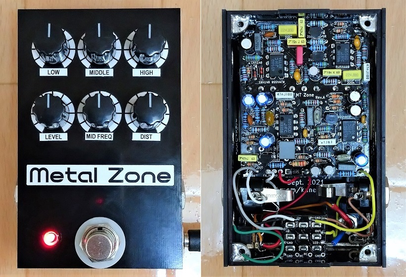
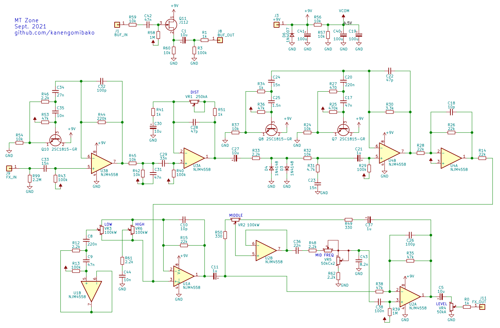
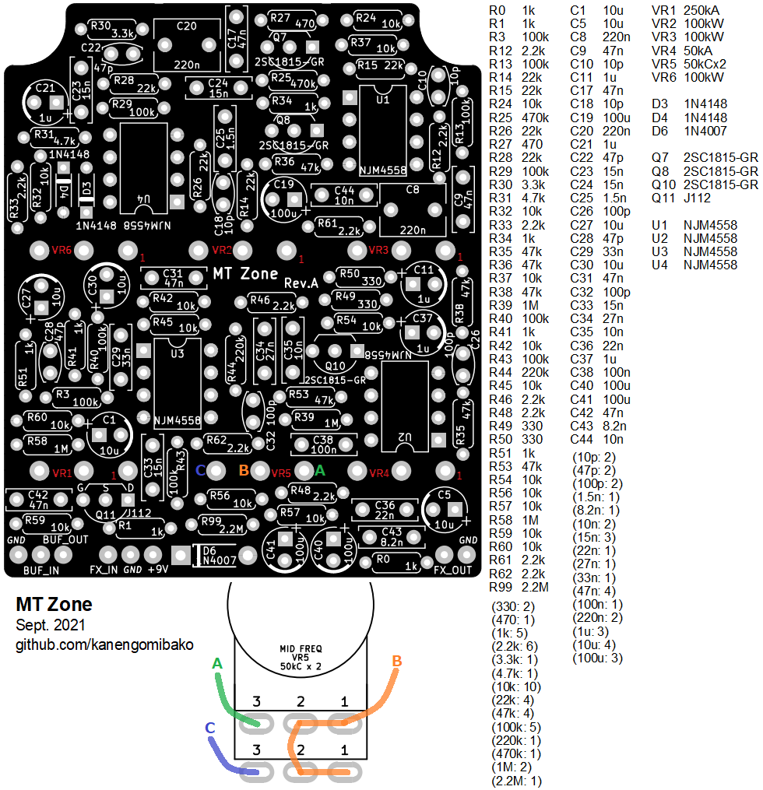
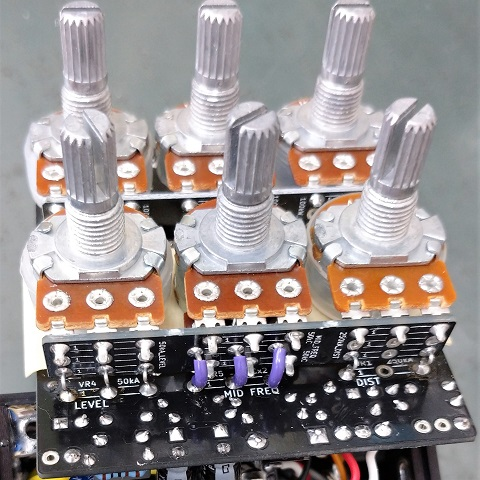
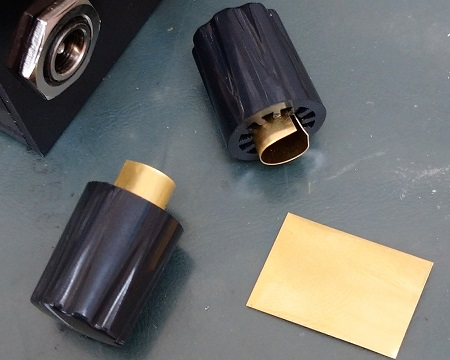

BOSS MT-2 Metal Zone
2021年11月01日 カテゴリー：自作エフェクター（アナログ）

Metal Zoneは自作エフェクターを始めた時からずっと作りたいと思っていましたが、50kC2連のポットの入手先が見つからずあきらめていました。今回Tayda Electronicsという海外のパーツショップでこのポットが販売されているのを見つけ、製作に至りました。
筐体は基板を組み合わせたもので、縦幅が10cmと少し短めとなっています。HAMMOND1590Bサイズのケースは縦幅11cm程度なので、DCジャックを上側に配置してもよいと思います。ただし2連ポットがあるため、高さに余裕があるケース（HAMMOND1590BS等）の方が安心です。
▽回路図（KiCadデータはGitHubへ）

発振対策の関係（後述）で、入力バッファを通した後にトゥルーバイパス方式と同じ配線をするという、特殊なバッファードバイパスを想定しています。出回っている元の回路図からの変更点は、FETスイッチ部分とバイパス音側バッファ・出力バッファの削除、出力保護抵抗R0とスイッチングノイズ対策抵抗R99の追加です。（LEVELポットがあるのでR0はジャンパーでもまず問題ないと思います。）
- 回路の特徴（参考ページ→Boss MT-2 Metal Zone pedal analysis）
最初に強力にミッドブーストされており、低音域・高音域がカットされた状態でダイオードクリップされます。その後低音域・高音域が足されていますが、わざわざトランジスタを使ったジャイレータ（シミュレーテッドインダクタ）が使ってあり、細かい音色調整がなされていることがわかります。そしてさらに、後段の3バンドイコライザにより幅広い音作りが可能です。 - 代替部品
M5218AL、 2SK184-GR、2SC3378-GR、1SS133といった部品は手に入りにくいので、代わりのものを探すことになります。回路としては前述の通り積極的にフィルタで音色調整されており、部品の特性自体が音色のカギとなっているわけではないと思われますので、それぞれ一般的な部品に置き換えています。 - 音漏れ・発振
FETスイッチや機械式スイッチには寄生容量があるため、わずかに音漏れが生じてしまいます（参考記事→MOS FETリレー G3VM-21GR 特性測定）。漏れた音が再び入力に戻り過度に増幅されると、発振の可能性が出てきます。BOSSの歪み系ペダルの多くはバイパス側にバッファがあり発振を防いでいますが、今回は回路規模縮小のため省きました。 - バイパス方式
入力バッファを使わず、トゥルーバイパスでギター直結を想定する場合には、入力インピーダンスを高くするためR43 = 1MΩ（C33 = 1.5nF）やR43 = 470kΩ（C33 = 3.3nF）といった値にします。ただしバッファなしだと、DISTやLEVELを上げた場合に発振しやすいため非推奨です。入力バッファを通し回路図通りR43 = 100kΩ（C33 = 15nF）だと、LOW・MIDDLE・HIGH・DIST最大でLEVEL3分の2程度まで大丈夫です。完璧ではないですがほぼ問題ないでしょう。より安全にする場合は、R43 = 15kΩ（C33 = 100nF）でもよいかと思います。
▽Rev.A基板・パーツリスト（基板販売は終了しました。）

MID FREQポットは追加の配線が必要ですが、その他のポットは基板に直付けできるようになっています。ポットの間隔は横18mm、縦25mmです。MIDDLEポットはWカーブだとやや急な変化で、Bカーブの方がより自然だと思います（参考ページ→Wien Bridge Based Parametric Equaliser）。
100kWや50kC2連ポットはTayda Electronicsにあります。他の部品もこの店でそろいますが、NJM4558のローノイズ選別品はないようです。送料が安い「7 to 30 Days Delivery」で注文すると、約3週間で届きました。全てPCBマウントタイプのポットを購入したので、メイン基板の上側に配線補助基板をくっつけて基板発注し、切り離して使っています（下写真）。

100kWポットはセンタークリックがある方を買ってみました。ギザギザシャフトに挿すタイプのノブを使うとセンター位置が少しずれてしまい気持ち悪いため、普通のイモネジ固定式ノブがよいです。
インチ（6.35mm）シャフト用ノブは6mmシャフトに装着すると、少し隙間があいて偏った回転になります。Pot Brass Sleeveというパーツがありますが、厚さ0.15mmの薄い金属板を切って使っても大丈夫でした（下写真）。「シムプレート」で検索すると出てきます。
